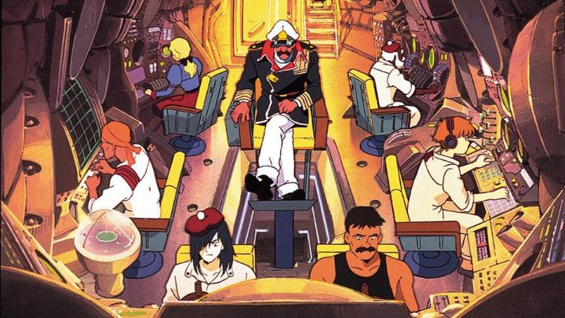

Studio Gainax is best known for "Neon Genesis Evangelion," an ambitious anime that would define both the studio and its director from that point on. But the show both the director (Hideaki Anno) and Gainax would make immidiately prior was the 1990 show "Nadia - The Secret of Blue Water," a grand adventure losely based the works of English author Jules Verne, especially "20,000 Leagues Under The Sea." By chance, the series would also give writing credits to Hayao Miyazaki, who had provided the producers the script decades prior, later finding success at his new studio, Ghibli. This are impressive traits for any anime, and it is no wonder the show is remembered as something of a classic of its time. Although, when I first watched "Nadia," I didn't find myself fully absorbed by it, much in part because of the dated material. Anime has come a long way since 1990, and while a handful of shows remain timeless classics, others fall prey to strange story choices. "Nadia" starts off quite well. While little is taken directly from any of Jules Verne's stories, his general sense of adventure and promise of future technology (relative to 1800) is portrayed successfully. The story follows young inventor Jean in his efforts to assist young Nadia on her quest back to her African birthplace from Western Europe, and slowly spirals around the mystery of her jewel necklace. The initial episodes are exciting, and generally lighthearted enough to be family-friendly, but deal with serious themes like racism (Nadia has darker skin than most of the characters), death, and the effects of war, a lot to pack into the first few of many episodes. As the adventure proceeds, they soon find themselves in a submarine run by Captain Nemo, he on a grander quest to stop a powerful evil, all the while avoiding the clutches of a Team Rocket-like duo of comedy-relief villains (although "Nadia" predates "Pokemon" by about seven years).Quite quickly, however, it becomes clear that the show is made up primarily of filler episodes, wherein the characters don't fully know what they are doing or how they need to do it, and thus spend their times idly. Entire episodes are wasted for minimal progression of characterization and relationships and petty conflict, and while the budding youthful romance between Jean and Naida is cute, far too much time without direction is spent on it. This was a show made explicitly for television broadcast, where having many episodes was a key part of the business, even though an infinite number was never likely in the cards (given there still exist anime with filler issues that last well over 100 episodes, perhaps I shouldn't be so quick to complain). A narration at the beginning of each episode reminds the viewers about uncovering "The Secret of the Blue Water," but the characters themselves spend the vast majority of the 39 episodes either not having heard of the "Blue Water," or giving any care into learning more about it. It isn't until the last few episodes that the story starts to pay off, but by the end there are a series of strange choices that make the anime less "family-friendly," be it some visual layouts that look similar to the religous imagery that would appear in "Evangelion," the unnecessary shots of Nadia being subject to fanservice (there are brief moments of nudity multiple times, which might be more forgiving if Nadia wasn't only 14 years old), or the romantic choices that come to be by the final episode (one young character happily marries another character old enough to be her father... "shudder").  Despite some good character designs, the animation is gererally mediocre, not aging well from its original broadcast. The English dub is ok, but insists on bad-accents for some characters, and the writing suffers on occasion (English translation on anime around this period was generally not great). The music can be memorable, but more because of watching the ample number of episodes and reuse of certain themes rather than of quality. Also, a brief mention of the feature film sequel... that was it. More seriously, although it takes place years later with older versions of the characters, it relies too much on recap-material from the show, and is largely a waste even for fans.A small part of me has a soft-spot for the show, but "Nadia" would benefit greatly from a rewrite and perhaps an updated adaptation. It's a shame too... given its more global setting and grand sense of adventure, it has a universal appeal that few other anime can match, despite its flaws. It's worth sitting through for historical context, or for fans looking for older pre-digital anime, but much better (and more recent) options of entertainment are available.
- "Ani" More reviews can be found at : https://2danicritic.github.io/ Previous review: review_Myriad_Colors_Phantom_World Next review: review_Napping_Princess